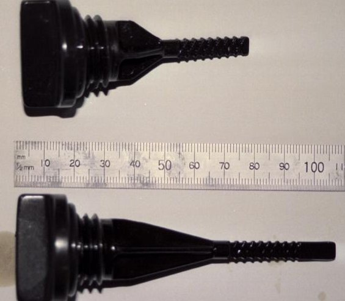
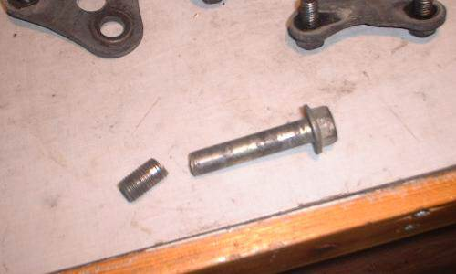

Download a copy of the original owners handbook that came with the bike.
Fuel
Oil changes
Washing & Cleaning
Rust
Headlight Globes
Fork rebuilds
Rear shocker & Swingarm bearing
Chain & Sprockets
Tyres
The battery
The Alternator Drive Chain
List member Steve Middleton put together a list of bits and pieces about RC17 maintenance. His list is very informative, comprehensive, and useful to everyone.
Recently, there have been some questions asked on the Team mailing list about the suitability of various petrols for the RC17.
In many parts of the world, the use of leaded petrol is being phased out (if it hasn’t been removed already) in the interests of public health and the environment. (The fact that unleaded petrol contains known carcinogens and is highly toxic seems to be beside the point..)
If you can, run the bike on petrol with a RON (Research Octane Number) of 91 or higher. The bike will run happily on 98RON Premium Unleaded, although your wallet may not appreciate it…
Avoid LRP (Lead Replacement Petrol) at all costs – it is evil, and there have been reports that long-term use of it can damage your engine.
Of course, if you live near an airport, feel free to use Aviation Fuel with those massive amounts of lead and super-high Octane numbers!
The RC17 is an air-cooled motorcycle – the oil is used as both lubricant and coolant. Because of this, it is essential to check the oil level weekly, and to change it regularly. We try to change the oil in our RC17s at about 4 to 5,000 kilometre intervals, and the oil filter at alternate oil changes.
When you do change the oil, make certain that you also drain the frame rails. The front frame section acts as an oil reservoir, and helps carry the oil to the oil cooler. Draining these will remove roughly 0.5 litre of old oil from the system. A complete oil change will take about 3.5 litres of oil, and a filter change will add about 0.5 litres to that.
To make a quick detour here, there have been some queries on the mailing list as to what oil filters to buy. You can buy the genuine Honda item (part number 15410-MJO-405), or you can chase up various after-market items. Interestingly enough, you may be able to use an oil filter from a car.
To check the oil level, put the bike up onto it’s center stand (if you’ve just changed the oil, it should already be there!). Start the bike and let it run for a couple of minutes – long enough to ensure that all the oil galleries, hydraulic lifters and the oil cooler are full, then stop the engine and remove the dipstick. Clean it with a rag and put it back into it’s hole. Do not screw it back into place. Wait about 30 seconds or so, and check the oil level. If the level is too low, then add more oil.
What we want to do is make certain that there is enough oil in the sump at all times. By checking the oil this way, we ensure that the sump will always have oil in it. It may mean we have too much oil in the engine, but I’d much rather have too much oil than not enough!

Just to complicate matters a bit, later models of the bike had a different sized dipstick. Early bikes had a long, narrow dipstick about 110mm long, whilst the later bikes had a short, stubby one about 60mm long. If you have a bike with the long dipstick, it is even more important to keep the oil levels high, as the amount of oil measured is smaller (and hence there is less room for error if it runs low).
Update: Karstein in Norway has informed me that from frame number RC17E-2010847 onwards, the listed oil capacity was changed from 3.6 litres to 4.5 litres.
Running the RC17 for extended periods with a low oil level (and by ‘low’ I mean less than half way up the dipstick) is guaranteed to give you grief. A complete bottom-end rebuild set me back over AU$2,500 after I did just that in 1995. You have been warned.
Seeing how the RC17 is now getting on for almost 20 years old, some oil consumption is to be expected. I have experienced (with a very worn engine) a consumption rate of 1 litre of oil per 1,000km whilst touring. This fell to less than 0.25 litre per 1,000km when commuting after having an engine rebuild.
We have found that oil consumption varies with the brand of oil used, and even from week to week. Mr_T uses Pennzoil motorcycle oil, and has reported a consumption of 0.5 litre after a 160km cruise and a hard day’s riding around the Phillip Island race track. I tried Penzoil and found the bike was using about 0.5 litres per week merely commuting.
Generally, I have found Shell VSX to be best in my bike. Of course, your bike may be different.
Mr_T’s comment:
I tried Shell semi-synthetic (whatever it’s called, SX?) and it burned off at a truly alarming rate, especially on the most recent dyno run producing frightening clouds of smoke.
This is where Mr_T and I differ greatly. My RC17 is a general ‘hack’ bike – I tour on it, I commute on it, I attend track days on it. So it generally looks rather grubby and dirty.
Mr_T, on the other hand, spends hours polishing and cleaning his. He has been known to polish the inside of the belly-pan, and even to clean his chain link by link with WD-40, a toothbrush and a rag. The appearance of his RC17 reflects this attention and care to detail.
One thing that I have noticed is that road grime tends to become baked onto the engine. This is extremely difficult to remove, even with a good scrubbing brush. So I tend to get the worst of it off, and then ignore it.
Mr_T uses a spray-on polish called ‘SynLube Bike Shine’. Synlube gives the engine that ‘wet and shiny’ look (hiding any road grime that might be there), and acts as a barrier to any more grime building up. I haven’t tried Synlube, but seeing how clean Mr_T’s bike always looks, I might just have to.
Mr_T’s comment:
Another engine polish I use is an old secret of mine, now available for the benefit of all. Either Wynn’s or CRC silicone spray does a fine job as a black engine and frame polish. When the can says “use with adequate ventilation”, believe it. The stuff smells remarkably like dry-cleaning fluid.
Having a steel frame, the RC17 is vulnerable to rust. This is even more so if you live in a country that has regular snow-falls and salt / sand on the roads.
Luckily, we don’t have that situation here. However, we still get rust patches on any steel components where the pain has been scratched, chipped or worn.
The worst offenders seem to be the frame, and the fuel tank where the paint has been chipped. To defeat rust, I use a product called ‘Kitten Neutra-Rust’. A paint-on liquid, it chemically reacts with the rust to produce iron with a hard black coating that resists further rusting.
Having two headlights is a distinct advantage for the RC17. Not only do they produce more light to see by, if one globe ‘blows’, you can usually manage to limp along on one. However, I have had both globes blow within days of each other, and riding home that night was an interesting experience!
The standard 55/60W halogen globes produce a very clear light. However, dirty lenses can reduce the light’s output by about 30 percent. If the reflectors get dirty (and this does happen), the reduction is even worse. Ensuring that the lenses and reflectors are clean will keep you safer at night.
One idea I have had floating around for quite a while has been to replace the standard 55/60W globes with something a bit brighter, say a pair of 60/100W halogen globes. Of course, I will have to see if the electrical system can cope with such an extra load.
Robin (one of our mailing list members) has told me that, yes, you can run a 60/100 headlight in the CBX without major problems. I’m currently running one 55/60W and one 60/100W globe. Oddly enough, the difference it wattage is not that noticeable.
Ted was quick to point out that the reflector may not cope too well with the additional heat from the higher-wattage globes, and that the extra wattage may place an additional strain on the regulator.
Given that Robin has been running a pair of 60/100W lights for 5 years, I don’t think that there is much danger there. But, as always, you can never tell!
With the 16” front wheel, the RC17 has very sharp steering and excellent handling. However, to get the best performance, you should change the fork oil and inspect the internals for wear every year. In particular, the anti-dive mechanism on the left fork leg should be inspected.
I have used the recommended weight fork oil and not had any problems with it. I don’t think that going for a lighter fork oil will have any benefit, other than upsetting the handling by having too much suspension movement. The same goes for using a heavier oil not allowing enough fork movement.
WARNING! WARNING! WARNING! WARNING!
Recently, we have had reports from team members of the rear shock mounting bolt breaking! This bolt is at the top of the shock absorber, and is critical to having a safe bike.
Do not over torque the bolt if you remove it – the recommended setting is 29 – 36 ft-lb or 4.0 – 5.0 N-m.
If you do remove the rear shock absorber, carefully check the bolt for signs of stress fractures or wear. If in doubt, replace it! It is better to spend a few dollars on a new bolt than to have a serious accident.

Here is a picture sent in by one of the Team members.
As for the rear shock absorber, getting it rebuilt is an excellent investment. I had mine rebuilt (when it was about 115,000 km old) and what a change it made to the bike’s handling!
Given that a new shock to suit the RC17 was $800 at the time, the $200 that the rebuild cost me was money well spent. If you’re wondering about improving the RC17’s handling, get the rear shock rebuilt – you won’t regret it.
As for removing the rear shock, it’s fairly straight forward. You’ll need to remove the rear wheel, the Pro-Link suspension linkages, and then the shock absorber drops straight down. Just be careful of the pre-load air line, and the damping adjuster cable. Putting it all back together again is merely the reverse. It took me only a couple of hours, and I spent time inspecting all the bearings in the suspension linkages and ensuring that they were all greased properly.
A word of warning here. The forks are rated to an air preload of 6psi max. Don’t go above this. I have found that about 4.5psi is adequate for most riding. The rear shock is rated to 57psi. I once ran mine at about 70psi for a short time when it was badly worn. It seems that 45-50psi suits my riding style and the local roads.
Following closely on from the rear shock absorber, the swingarm bearings should be inspected and greased at regular intervals. The bearings are a standard Honda part across several models, so they should be stocked by any good Honda shop.
I have had swingarm bearings that were rusted solid. I had no way of knowing their condition until I removed the swingarm completely and inspected all the pieces. Luckily, I had a spare swingarm and bearings to replace it with. (The original swingarm had been damaged in a crash by the previous owner, and it’s easier to replace the swingarm than fix it.)
Similarly, Mr_T’s swingarm bearings were completely worn out when he inspected his. Also, the spacer shaft that runs through the middle of the swingarm pivot point was badly worn and corroded. Luckily, the spacer is reversible, so the damaged section could be moved away from the bearing surfaces.
In both cases, there was no visible sign of wear or damage to the bearings. With the bike on it’s centre stand, there was no visible droop or movement of the swingarm.
Looking for a quick way to get more acceleration?? Change the sprocket ratios.
The standard sprocket ratio of 16/45 front/rear gives a top speed of around about 220kph.
Mr_T has run a 15/45 front/rear to get better acceleration and slightly higher top speed, where I run a 16/43 front/rear to get better touring and cruising. This setup is supposdly able to give a higher top speed than the standard gearing as you’re doing lower revs for the same speed. But I have found that in top gear my RC17 runs out of puff at about 190kph, and won’t pull much past 200kph. Dropping back to 5th gear gives a bit more speed.
This is all a bit academic – I do more commuting and touring than high-speed blasts around a race track, and the 16/43 suits me fine.
I have tried several different tyres on my RC17, and have found that a matching set of Metzeler ME33/55A rubber gives an excellent balance between longevity and grip.
The Metzeler front tyre has a life of around 25,000km or more, whilst the rear has a life of about 15 to 20,000km. These figures are rough estimates, given that I have done 100,000km on my RC17 and am still on the third Metzeler front, but the fifth rear tyre.
One point of vital importance is to get the correct profile tyre on the front. When I bought my RC17 it had a 120/80 front, rather than a 110/90. Although this gives the same rolling radius, it affects the handling terribly. I was experiencing tank-slappers at low speed, and the way it tipped into corners was terrifying.
On the rear, I have tried a Bridgestone BattleAxe 17 (I think), and a Michelin M48 before settling on the Metzeler. Both the BattleAxe and M48 where terrible in the wet, and wore rather quickly – neither lasted more than about 10,000km.
Similarly, Mr_T has tried a BattleAxe 17 dual-compound on the front, which “wasn’t too bad, but not as good as the Metzeler” to quote his words.
Grip-wise, the Metzelers are excellent. When they do slide, it is very gently and progressive. In all cases, by the time I have realised that I’m sliding and taken action to correct it, the tyres have regained traction.
The Metzeler ME33/55 tyres have been recently replaced by the ME330/550 matched pair. Several list members have indicated that the new tyres are every bit as good as the old 33/55s, and possibly a bit better.
Pressure-wise, Mr_T runs his tyres at 29-31psi (front) and 30-32psi (rear) when attending track days. For normal riding, he uses pressures 3-4psi higher. I have found that pressures of around 30psi on the track and 36-38psi on the road suit me better.
The RC17 seems to be a bit hard on the battery, so checks are important for battery life. In hot weather, check more often. Just as well inspecting the electrolyte level is as easy as removing the RH side cover.
I assume the charging system gets a bit aggressive. The battery is nestled into a recess in the airbox, so two sides are shielded to some degree from heated engine air behind the sidecover.
Viking: I have been buying a new battery every 3 years or so. Either I am more careless than I thought, or the electrics are more aggressive than I thought!
Update: There is a fix for this problem! A long-time RC17 owner sent us instructions on how to resolve this issue. It appears that there is a small design fault in the RC17’s wiring. The regulator / rectifier unit sees too small a voltage from the battery. So rather than seeing a fully charged battery, it sees a battery that is 1V under-charged, and keeps trying to charge the battery.
Here are Ian’s words:
Cooking batteries. After three batteries in six years and always adding water to dry batteries, I located my problem to a voltage drop between the battery and the regulator. What happens is that the regulator feeds about 4 amps to the alternator field coil, depending on the rate at which it wants to charge the battery. The four amps comes from the battery through the ignition switch (if it came directly, the battery would discharge through the regulator when the bike was turned off).
There was a one volt drop through the switch, resulting in the regulator seeing the battery voltage minus one volt. So on a fully charged battery (13.8 volts) the regulator saw only 12.8, and kept charging. A relay connecting the regulator output wire (which goes direct to the battery) to the regulator input, thus bypassing the ignition switch (but controlled by it) fixed the problem 100%. Haven’t needed to add water to the new battery in two years.
BTW, while going to wreckers to get a replacement regulator, I found that EVERY one in the wrecker’s stock had the connector burned at the pin that carries the output current. Mine was too, so while fitting the relay, I replaced the connector with a few individual bullet connectors.
Once again, Ian steps forward with some very useful information, this time on the altenator drive chain and it’s problems.
The problem is twofold: the chain stretches, and the tensioner is badly designed. The chain is under stress (much more than the cam chain) because the alternator has a lot of spinning mass and takes some accelerating and decelerating as the engine revs change. There is a clutch to take the worst shocks out, but the chain is not up to the job, although the same type of hivo chain drives the cams with no problems.
And the tensioner spring loads the slipper blade against the chain, with a ratchet to hold it tight. But once the chain stretches enough, the ratchet goes past the last tooth and now only the spring provides any tension and the tensioner rattles about as the engine revs change. As everyone knows, the only fix is an engine teardown to replace the chain. If the tensioner rivets are loose as in my engine, it needs to be replaced too. I think if this condition had been allowed to go much further the tensioner would have gone backwards through the gearbox.
BTW, if you have a rumbling noise, a quick check can be easily done to see if the tensioner is beyond the last ratchet tooth (and therefore it’s time to order parts, or sell the bike). Remove the alternator cover (three allen screws) and try to rock the fan back and forth. If you can move it relative to the crankshaft, things are getting loose down there.